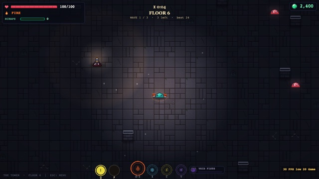
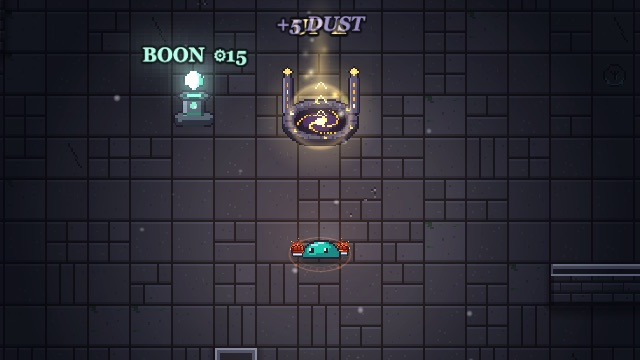
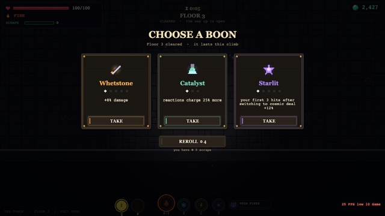
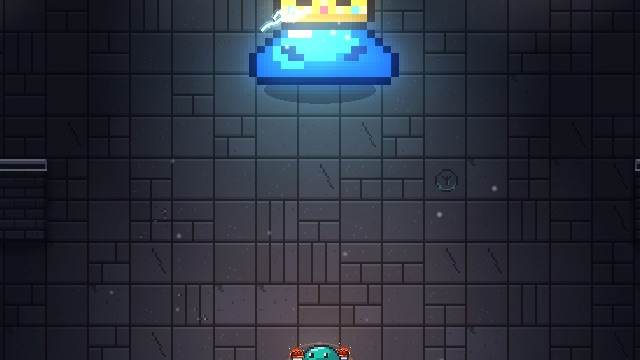
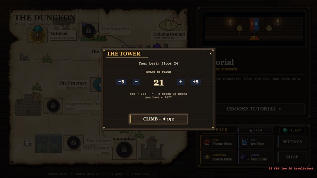

The Tower
An endless climb. Every floor is one arena: clear its waves, take the pay, step into the rift and go up. Every third floor gives you a boon, every tenth is a boss, and when you fall, the loot you found stays with you. This page has every rule and every number.
- At a glance
- Climb
- How floors get harder
- Twist floors
- Go up
- Scraps and the shrine
- Pick a boon
- Bosses
- Falling
- Starting further up
- Garden blessings
- Your best floor
- Tips
At a glance
The Tower opens once you've finished the tutorial, alongside the story. It sits at the end of the path on the map, marked ∞. The first time you go in, the game shows its own five-page guide. You can read it again from the little ? beside the Tower on the map, or from how it works on the Tower's start panel.
If a story level keeps beating you, the Tower is where to get stronger. After two deaths in a row on a story level, the map suggests it too.
Climb

You arrive at the bottom of the arena and the floor's name flashes up: FLOOR 12, and after it the floor's plan or twist if it has one, like FLOOR 12 · A SWARM. A moment later the first wave comes.
A normal floor has three waves. Before each enemy appears, a landing ring shows up on the floor and shrinks over the spot where it will land. That gives you a little under a second, a touch more for each later enemy in the same wave. Rings are always placed at least 5 tiles from where you stand when the wave is drawn. If you, or another enemy, are on the spot when the ring closes, the enemy lands somewhere else instead.
When everything in a wave is dead (anything it split into or summoned too), the next wave's rings appear 1.2 seconds later, with a WAVE 2 banner. Clear the third wave and the floor is done.
Your health and your ult gems carry over from floor to floor. Nothing refills them between floors except the heal you get for each clear, so a hurt slime stays hurt.
How many come
Floors 1 to 3 send five, six and seven enemies: one, one, then three; two, two, two; then two, two, three. From floor 4 a floor holds about 8, one more every four floors, up to 24. The count wobbles by up to a fifth either way and the waves are split unevenly. The waves before the last get their share rounded down, and the last wave takes whatever's left. The floor's plan can raise or lower it.
Each wave also has a points budget that grows with the floor, and the stronger kinds cost more of it. That's why the heavy hitters turn up more and more often as you climb. From floor 4, the last wave always opens with its headliner: the most expensive kind it can afford.
A floor never holds more than one of each elite (The Gem, the Frost Slime, the Slime CEO, the Adaptive Shade), or more than two of any of the other heavy kinds.
Who you meet
The Tower brings in the story's enemies in the order the story introduces them. A kind can appear from the floor shown here onward.
| From floor | Kind | Sort |
|---|---|---|
| 1 | Slime | Melee |
| 2 | Spitter | Ranged |
| 3 | Berserker | Melee |
| 4 | Splitter | Melee |
| 6 | Mortar | Ranged |
| 7 | Rooter, Leech | Ranged |
| 8 | Healer Slime · Armored Slime · Storm Elemental | Support · Melee · Ranged |
| 9 | Torpedo Diver · Void Sniper · Cheerleader Slime | Ranged · Ranged · Support |
| 10 | Budding Slime | Melee |
| 11 | Hunter Slime, Singularity Slime | Melee |
| 12 | Anchor Slime, Wraith | Support |
| 13 | Encased Slime | Ranged |
| 14 | The Gem · a tougher Void Sniper with a gold scope | Elite · Ranged |
| 15 | Frost Slime · Drowner* · Ripplerunner* | Elite · Melee · Ranged |
| 16 | Slime CEO | Elite |
| 17 | Tidecaller* · Wave Rider* | Support · Melee |
| 18 | Adaptive Shade | Elite |
| 19 | Tidal Guard* · Wishing Well* | Ranged · Support |
| 20 | Conduit* | Ranged |
* Water kinds only come when there's a fair amount of water on the floor as the wave is drawn, which mostly means the Pools layout or a Flooded floor. Only one Gem can be out at a time; if one is already there, a plain Slime comes in its place. The book of enemies on the map describes every kind.
The plan
From floor 4, each normal floor rolls a plan. It changes how many come, how strong each one can be, which sort is likelier, and which layouts the arena can have. Its name is in the floor's banner.
| Plan | Chance | What changes | Layouts |
|---|---|---|---|
| (no name) | 35% | A plain mix. | Any |
| A SWARM | 17% | Half again as many, but cheaper kinds. Melee kinds likelier. | Lanes, Cross, Ring |
| ELITES | 13% | About half as many, with over twice the budget. Elites four times as likely, and the dearest kinds favoured. | Ring, Pillars |
| SNIPERS' NEST | 13% | Ranged kinds three times as likely. | Columns, Bunkers |
| A BRAWL | 13% | 15% more of them. Melee kinds three times as likely. | Pillars, Cross, Pools |
| THE COURT | 9% | A few fewer, each a little stronger. Support kinds three times as likely, elites half again. | Ring, Bunkers, Pools |
Layouts
Each floor's arena is built fresh for each climb, so the same floor number looks different next time. A normal arena is 24 to 33 tiles wide and 17 to 23 tall; a boss arena is always 32 by 24. Floors 1 to 3 use Pillars, Bunkers or Cross. Every layout is mirrored left to right, the middle always stays open (that's where the rift will open), and no cover ever walls off part of the room.
Resistances
From floor 4, some enemies arrive resisting an element, shown by a coloured ring under them. A resisted hit does 40% of its damage, so switch. The chance for each enemy is 12% plus 1.2% per floor, up to half of them from floor 32.
Most resist one element. About one in seven resisters resists two. From floor 15, one in twenty-five resists all three of fire, ice and lightning. Cosmic is never resisted.
How floors get harder
Every floor past the fifth gives enemies 8% more health and 7% more damage than the floor below, and it compounds. The first five floors are eased in: floor 1 is at 45% of its full strength, then 60%, 72%, 84% and 93%. Floor 6 is the first at full strength.
The table shows an enemy's health and damage as a multiple of its strength in the tutorial. For comparison, the story's levels are at: the Gauntlet ×1.15 health and ×1.09 damage, the Void Rift ×1.32 and ×1.19, the Fracture ×1.52 and ×1.30, the Cistern ×1.75 and ×1.41. So by floor 4 the Tower's enemies are already tougher than the Cistern's, and hit about as hard.
| Floor | Enemy health | Enemy damage |
|---|---|---|
| 1 | ×1.0 | ×0.6 |
| 2 | ×1.4 | ×0.9 |
| 3 | ×1.8 | ×1.2 |
| 4 | ×2.3 | ×1.5 |
| 5 | ×2.8 | ×1.7 |
| 6 | ×3.2 | ×2.0 |
| 10 | ×4.4 | ×2.6 |
| 15 | ×6.5 | ×3.6 |
| 20 | ×9.5 | ×5.1 |
| 25 | ×14 | ×7.2 |
| 30 | ×20 | ×10 |
| 40 | ×44 | ×20 |
| 50 | ×96 | ×39 |
Health outgrows damage. High up, the problem is less that they hit hard and more that they take forever to kill, so damage boons, reactions and resisted-element switching matter more the higher you go.
The Training Ground on the map can set its enemies to any Tower floor's strength with its FLOOR setting, if you want to practise against the floor that stopped you.
Twist floors
Every fourth floor from floor 5 (5, 9, 13, 17, 21 and so on) is a twist floor: it bends one rule. Its banner shows in blue, like FLOOR 13 · WARDED, and a line over your head says what changed. Which twist you get is random each climb, from the ones that can appear that high. A twist floor pays 25% more glorps.
| Twist | From floor | What it does |
|---|---|---|
| FLOODED | 5 | "The floor is water. Ice runs on it, lightning loves it." Pools spread across the arena, which also lets water kinds come (from floor 15). |
| SWARM | 5 | Every wave is half again as big, and each enemy has 70% of its usual health. |
| SHIFTING | 5 | Between waves the cover crumbles and a different layout rises (THE WALLS SHIFT). Nothing living is ever walled in, and you get an extra moment to find new cover. |
| FRENZY | 9 | Enemies move about a third faster. |
| WARDED | 13 | Every enemy resists an element. Switch. |
Go up

The moment the last enemy of the third wave dies, the floor is cleared: FLOOR 6 CLEARED, and the floor's pay over your head.
What a floor pays
- Glorps. 10 on floor 1, then 12% more for each floor up, and five times as much on a boss floor. 60% of it comes off the enemies as they die, the coins flying up to your counter; the rest comes on the clear. Every coin is yours the moment it's paid, even if you fall a second later. A Splitter and all its pieces pay one enemy's share between them, and the copies a Budding Slime makes pay nothing; the clear makes up the difference.
- Dust for the Enchanter's Isle. 6 plus half the floor number (60 plus half on a boss floor). Half comes off the kills, the rest streams out of the last enemy to fall.
- A sealed book, sometimes. The chance is 2.6% on floor 1 and grows by 0.6% a floor, up to 30% from floor 47. It's rolled on the kills, so the book pops out of an enemy. Boss floors give three instead.
- A garden seed, about one floor in five, also from a kill. Every boss gives one.
- Health back: 15% of your max HP. Second Wind and some garden blessings add to it.
The usual drops still happen too. An enemy from a wave has a 12% chance to drop a 5-glorp coin and an 8% chance to drop a health potion (+25 HP). Anything an enemy splits into or summons drops neither.
| Floor | Glorps | Dust | Sealed book |
|---|---|---|---|
| 1 | 10 | 6 | 2.6% |
| 2 | 11 | 7 | 3.2% |
| 4 | 14 | 8 | 4.4% |
| 6 | 18 | 9 | 5.6% |
| 8 | 22 | 10 | 6.8% |
| 10 · boss | 139 | 65 | 3 books |
| 12 | 35 | 12 | 9.2% |
| 16 | 55 | 14 | 11.6% |
| 20 · boss | 431 | 70 | 3 books |
| 24 | 136 | 18 | 16.4% |
| 30 · boss | 1,337 | 75 | 3 books |
| 40 · boss | 4,154 | 80 | 3 books |
| 50 · boss | 12,902 | 85 | 3 books |
These are the base glorps. A twist floor pays 25% more. The Greed boon, some garden blessings and the relics that change your glorp income all count, multiplied together.
The rift
The way up opens in the middle of the arena: a stone dais with gold light spiralling into it, marked UP ▲. Step onto it and the floor falls away under you, and you rise to the next one. There's no timer, so take your time. Anything still lying on the floor when you leave is gone: coins, potions and, most of all, scraps.
On a floor that gives a boon (every third floor and every boss), the boon screen comes up first, and the rift opens once you've chosen. On every other floor, the rift opens straight away, with the shrine a few steps to one side of it.
Scraps and the shrine
Scraps only drop in the Tower. A little over half of your kills drop one, a small green orb. Walk within 3 tiles and it flies to you. The bar in the top left counts them. You can carry at most 40, and they last for this climb only: a new climb starts at none. The Void Sovereign scatters 8 more when it dies.
Scraps buy two things:
| ⚙ 15 the shrine | On a floor with no boon pick, a small shrine with a turning crystal stands beside the rift, tagged BOON ⚙15. Step onto it with 15 scraps and you get a boon pick, the same screen as any other. One per floor. Without enough, it tells you how many it needs. |
| ⚙ 4, 6, 8... a reroll | On any boon screen, REROLL swaps all three cards for three new ones. The first costs 4 scraps, and each reroll after it costs 2 more, for the rest of the climb. |
A full bar wastes every scrap after it. With 15 or more, buy at the shrine before you step into the rift.
Pick a boon

You choose a boon after every third floor (3, 6, 9...), after every boss, at a shrine, and as catch-up boons when you start further up. Each time you get three cards, drawn at random from the boons you haven't maxed. Element boons only come up for elements you've unlocked. Take one by its TAKE button, or reroll. There's no skipping.
A boon lasts for this climb only. Taking the same boon again raises it a tier, up to its maximum, and its button says how far along you are (TAKE · 2/5); once it's maxed it stops showing up.
Every boon
| Boon | Each tier | Tiers | At the top |
|---|---|---|---|
| Whetstone | +8% damage | 5 | +40% |
| Thick Skin | +15 max HP (and the HP itself, right away) | 5 | +75 HP |
| Hardened | 7% less damage taken, multiplied each tier: 7%, 14%, 20%, 25%, 30% | 5 | 30% less |
| Kindled | your first 3 hits after switching to fire deal +12% | 5 | +60% |
| Frostbitten | your first 3 hits after switching to ice deal +12% | 5 | +60% |
| Overcharged | your first 3 hits after switching to lightning deal +12% | 5 | +60% |
| Starlit | your first 3 hits after switching to cosmic deal +12% | 5 | +60% |
| Fusion | reactions deal +10% damage | 3 | +30% |
| Quick Gems | ults charge 12% faster | 5 | 60% faster |
| Crescendo | ults deal +10% damage | 5 | +50% |
| Catalyst | reactions charge your gems 25% more | 3 | 75% more |
| Light Feet | each step takes 7% less time, multiplied each tier | 3 | steps take 80% as long |
| Leech | every kill heals 1 HP | 5 | 5 HP a kill |
| Spiked Hide | a melee hit on you deals 5 damage back | 5 | 25 back |
| Greed | floors pay 15% more glorps | 5 | +75% |
| Second Wind | a cleared floor heals 10% of max HP more | 3 | 45% a floor in all |
| Keen Edge | 5% of your hits crit, for ×1.5 damage | 5 | 25% of hits |
How they stack
- Different boons all work at once. Within one boon, the tiers add up (Whetstone at 5 is +40%), except Hardened and Light Feet, whose tiers multiply.
- Boons, the relics you wear and your garden blessings all count together. Percentages multiply with each other, and flat amounts (max HP, crit chance, health per kill) add. Crit chance tops out at 50% however you get it.
- The four element boons pay for switching into their element, not for staying on it. The bonus covers your first three hits after the switch; switch away and back to get it again.
Bosses

Every tenth floor is a boss. A boss floor is a single wave: a roar, a big red ring at the top of the arena, and the boss lands (the Geode rises out of the middle of the floor instead). Then the fight holds for a moment while the camera swoops in on it and its name slams in. The floor is cleared once the boss, and everything it brought with it, is dead.
Bosses come round in order, then start again: floor 50 is the Voltslime again, 60 the Void Sovereign, and so on.
| Floor | Boss | What to expect |
|---|---|---|
| 10, 50, 90 | The Voltslime the storm that walks | A slam between attacks, then volleys of bolts: scattered, homing, in a spiral, and bolts that bounce off the walls. Once a round it calls in four sparking slimes that zap you if you stand next to one. |
| 20, 60, 100 | The Void Sovereign ruler of the dark between stars | Void mines that fill up like a clock and then go off, and a gravity well that drags you a tile closer every 0.8 seconds while you're within 6 tiles of it. A second phase at 60% health and a third at 30%, each faster than the last. It scatters 8 scraps when it dies. |
| 30, 70, 110 | Two Queen Slimes mother of the brood | Two queens at once, one on each side, breeding slimes all fight long. Each queen has two and a half times the health the floor would give her. Her bar shows her brood charges. |
| 40, 80, 120 | The Geode the stone that remembers fire | A crystal heart in a shell of stone plates. Plates take half damage. Heat a plate with fire (two hits), then hit it with ice and it shatters. With every plate gone, its heart is exposed for a while. Fault lines erupt across the room and Encased Slimes come out of the walls; once it's lost a third of its health, rifts split the floor (they burn, so dash across); in its last third it sinks and surfaces somewhere else. |
How tough
A Tower boss has its story health, multiplied by the floor's growth: about ×2 on floor 10, ×4.3 on 20, ×9.3 on 30, ×20 on 40 and ×43 on 50.
Half health
When a boss falls to half its health, its arena changes shape: a flash, the cover crumbles, and a different layout rises (THE WALLS SHIFT). With two Queen Slimes, it's when the pair of them together are down to half. It happens once per boss.
What a boss pays
The relic's tier depends on the floor. If you already own every relic of those tiers, you get one of any tier you're missing. Once you own every relic, a boss drops none.
| Boss floor | Relic tier |
|---|---|
| 10 to 19 | Novice or Adept |
| 20 to 39 | Adept or Legend |
| 40 and up | Legend |
Saplings are trees for the orchard in Starfall Grove. The higher the boss, the rarer the trees it can drop: Voidpine and Nebula Palm from floor 20, the Halo Tree from 30, the Eclipse Fig from 40 and the Tendril Heart from 50. The Halo Tree, Eclipse Fig and Tendril Heart can't be found anywhere else.
Tower bosses don't pay ult fragments; those come from the story.
Falling
When your health runs out, the climb ends. The death screen sums it up: the floor you reached, your best floor (with NEW BEST if you beat it), the climb's time, boons taken, relics and books found, slimes slain and glorps earned.
You keep
Every glorp, including the coins paid off kills on the floor you fell on. All your dust, sealed books, seeds, saplings and relics. Your best floor, and your achievement progress.
You lose
Every boon. Every scrap. The garden blessings you took into the climb. The reroll price goes back to 4.
TRY AGAIN on the death screen, like RESTART in the pause menu, starts a new climb from floor 1, free. To start further up, go back to the map and choose the Tower there. Leaving mid-climb through MAIN MENU ends the climb the same way a fall does, and you keep what you found.
Starting further up

Once your best floor is 5 or more, choosing the Tower on the map opens a start panel. You can start on any floor from 1 up to three below your best. It opens on the highest you can pick; the − and + buttons move it by one, −5 and +5 by five.
- The fee is twice what that floor normally pays (without a boss floor's bonus), taken from your glorps when you press CLIMB. Floor 1 is always free. Short of glorps, the button says so.
- Catch-up boons: you get one boon pick for every boon the floors below would have given you, every third floor and every boss. You choose them one screen at a time (Catch-up boon 1 of 8) before the first wave lands.
| Start on floor | Fee | Catch-up boons |
|---|---|---|
| 5 | 32 | 1 |
| 10 | 56 | 3 |
| 15 | 98 | 5 |
| 20 | 172 | 7 |
| 21 | 192 | 8 |
| 25 | 304 | 10 |
| 30 | 534 | 11 |
| 40 | 1,662 | 15 |
| 50 | 5,160 | 19 |
The fee is small next to what the skipped floors pay: floors 1 to 20 pay 1,179 glorps between them. What a skip really costs you is their loot: the books, seeds and dust, the shrine boons, and the relics of the bosses you skip.
Garden blessings
On the Enchanter's Isle, a ripe crop in the Dust Garden gives dust and banks its blessing. Every banked blessing goes with the next climb you start, for the whole climb, and leaves the bank. A banner names them as you land on your first floor: BLESSED: SHARP, HARDY.
- Different blessings stack. The same one can't be banked twice.
- The garden's rake tier caps how many you can bank at once: 1, then 2, then 3.
- Blessings count together with your boons and relics, the same way boons do.
- They're spent the moment a climb starts, even one that ends on floor 1. A restart starts with none, so harvest before you go up.
The Tower drops these seeds. A seed is never used up: planting one puts a copy to work, and harvesting gives it back. A copy past the number of plots your rake gives turns into dust instead (15, 30 or 60, by tier). Which tier drops depends on the floor: only tier 1 below floor 10; from 10, tier 2 one time in three; from 25, tier 3 two times in five.
| Seed | Tier | Blessing | For the climb |
|---|---|---|---|
| Dust Sprout | 1 | Sharp | +3% damage |
| Glowroot | 1 | Hardy | +10 max HP |
| Mossbell | 1 | Mending | cleared floors heal 5% more |
| Puffcap | 1 | Padded | take 2% less damage |
| Twinkle Grass | 1 | Glinting | +1.5% crit chance |
| Starbloom | 2 | Lucky | +2% crit chance |
| Frostfern | 2 | Quickened | ults charge 6% faster |
| Sunpetal | 2 | Kindled | reactions charge 8% more |
| Bubblewort | 2 | Buoyant | move 3% faster |
| Pinwheel Poppy | 2 | Whirling | ults charge 5% faster |
| Ember Pepper | 2 | Spicy | +2% damage, reactions charge 3% more |
| Emberheart | 3 | Fleet | move 4% faster |
| Void Lily | 3 | Prosperous | Tower floors pay 5% more |
| Nebula Orchid | 3 | Thunderous | ults deal 5% more damage |
| Eyestalk | 3 | Watchful | +2.5% crit chance |
| Galaxy Gourd | 3 | Spiralled | ults deal 4% more and charge 3% faster |
Fishing, the orchard's trees and a couple of achievements give blessings of their own, and they bank the same way.
Your best floor
Your best floor is the highest floor you've cleared. It's saved the moment you clear it, so it counts even if you fall on the next one. You see it on the line under the floor number, on the start panel, and on the death screen. It opens things all over the game.
| Best floor | What it opens |
|---|---|
| 1 | With the tutorial done: the relic shelf and the ULTS tab in Glurp's shop, and your first relic slot. |
| 5 | A second relic slot. Starting further up. In the garden shop: the rake's second tier, the Silver Can and the Crystal Rod. |
| 10 | The lake on the Isle, and a fifth orchard plot to clear. |
| 15 | A third relic slot. Legend relics in Glurp's daily stock. The rake's third tier, the Crystal Can and the Starweave Rod. |
| 20 | The trampoline bounces you up to the Cloud Sea. A sixth orchard plot. |
| 30 | A fourth relic slot. The rake's last tier, the Starwell Can and the Voidcaster. |
| 35 | A seventh orchard plot. |
| 40 | The moonwell stops just staring back. |
| 50 | A fifth relic slot, and an eighth orchard plot. |
The garden and orchard upgrades still cost glorps; your best floor only puts them on sale.
Achievements
| Achievement | How | Reward |
|---|---|---|
| First Steps | Clear floor 10. | 200 glorps |
| Halfway Up | Clear floor 25. | 600 glorps, 200 dust |
| Summit | Clear floor 50. | 1,500 glorps and the Summit Edelweiss seed (Lofty: Tower floors pay 6% more, +2% damage) |
| Untouchable | Clear a floor from 10 up without taking a hit. | 300 glorps |
| Kingslayer | Beat 5 Tower bosses. | 500 glorps, 3 sealed books |
Tips
- Sweep the floor before you step into the rift. Scraps, coins and potions left behind are lost.
- Spend your scraps. The bar stops at 40, a shrine boon is 15, and the first reroll is only 4.
- Switch elements. From floor 4 more and more enemies resist one, on a Warded floor every one of them does, and the element boons pay you for every switch.
- Use the rings. Everything in a wave lands at least 5 tiles from you, and you see where before it arrives.
- Watch your health between floors. A clear only gives back 15%, so Thick Skin, Leech and Second Wind are worth more the longer you climb.
- For the Geode, bring fire and ice: two fire hits on a plate, then ice.
- Harvest your garden before a climb, and don't start a throwaway climb while blessings are banked.
- When you want loot rather than height, start low. Every boss on the way up drops a relic you don't own yet.
The Tower guide. Numbers are for the current version of the game.